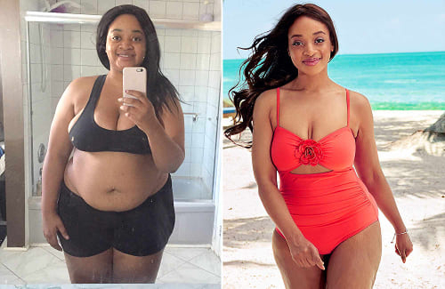

<section class="review__section">
  <div class="container">
    <div class="review__section-wrapper">
      <h2 class="review__section-title">समीक्षाएँ:</h2>
      <h3 class="review__title">प्रिय, 29 वर्ष, युवा माँ</h3>
      <p class="review__text">
        गर्भावस्था के बाद मेरा वजन 12 किलोग्राम बढ़ गया और अपने पहले वाले आकार में वापस आना बहुत मुश्किल था।. लगातार
        थकान, खेल-कूद के लिए समय की कमी. लेकिन वन टू स्लिम ने मेरी मदद की! सिर्फ 6 हफ्तों में मेरा 9 किलो वजन कम हो गया.
        अब मैं हल्का और अधिक आश्वस्त महसूस करता हूँ!
      </p>
      
      <h3 class="review__title">राजेश, 34 वर्ष, कार्यालय कर्मचारी</h3>
      <p class="review__text">
        ऑफिस का काम, गतिहीन जीवनशैली - मेरा वजन 95 किलोग्राम तक पहुंच गया. स्वास्थ्य समस्याएं शुरू हुईं और डॉक्टर ने कहा
        कि मुझे तत्काल वजन कम करने की जरूरत है. मैंने वन टू स्लिम आज़माया - और 2 महीने में 14 किलोग्राम वजन कम किया!
        सख्त आहार और कठिन वर्कआउट के बिना
      </p>
      <h3 class="review__title">अनीश, 22 वर्ष, छात्र</h3>
      <p class="review__text">
        मुझे हमेशा अपने शरीर को लेकर शर्म आती है. वे विश्वविद्यालय में मुझ पर हँसे. फिर मैंने अपना जीवन बदलने का फैसला
        किया! वन टू स्लिम का उपयोग करके मैंने 7 सप्ताह में 11 किलो वजन कम किया और अब अधिक आत्मविश्वास महसूस कर रहा हूं।
      </p>
      <h3 class="review__title">निशा, 37 वर्ष, गृहिणी</h3>
      <p class="review__text">
        35 साल का होने के बाद मेरा वजन तेजी से बढ़ने लगा।. मेरे परिवार ने कहा कि यह उम्र के कारण है, लेकिन मैं इसे
        बर्दाश्त नहीं करना चाहता था।. एक मित्र ने वन टू स्लिम की सिफारिश की. 8 हफ़्तों में मेरा वज़न 13 किलोग्राम कम हो
        गया! अब मेरी त्वचा सख्त हो गई है और मेरे कपड़े बहुत अच्छे लगते हैं
      </p>
      
      <h3 class="review__title">विनोद, 41 वर्ष, ड्राइवर</h3>
      <p class="review__text">
        काम की वजह से मैं पूरा दिन गाड़ी चलाता हूं और मेरा वजन 100 किलोग्राम से ज्यादा हो गया है. वन टू स्लिम मेरे लिए
        मोक्ष बन गया है! 10 सप्ताह में मेरा वजन 18 किलोग्राम कम हो गया और अब मैं हल्का महसूस कर रहा हूं. जोड़ों का दर्द
        गायब हो गया और चलने पर सांस लेने में तकलीफ भी दूर हो गई।
      </p>
      <h3 class="review__title">दिव्या, 25 वर्ष, मॉडल</h3>
      <p class="review__text">
        फैशन की दुनिया में परफेक्ट दिखना जरूरी है, लेकिन लगातार डाइटिंग करना थका देने वाला होता है. वन टू स्लिम मेरी खोज
        है! यह मुझे सख्त आहार प्रतिबंधों के बिना पतला और सुडौल शरीर बनाए रखने में मदद करता है।
      </p>
      <h3 class="review__title">अजय, 45 वर्ष, व्यवसायी</h3>
      <p class="review__text">
        मेरा वजन हमेशा अधिक रहता था, लेकिन 40 के बाद स्थिति खराब हो गई - मधुमेह और रक्तचाप की समस्या शुरू हो गई. वन टू
        स्लिम ने मुझे 2.5 महीने में 15 किलोग्राम वजन कम करने में मदद की. डॉक्टरों ने कहा कि मेरी सेहत में सुधार हो गया
        है!
      </p>
      
      <h3 class="review__title">मीरा, 31 वर्ष, शिक्षिका</h3>
      <p class="review__text">
        मैंने वजन कम करने के लिए कई तरीके आजमाए, लेकिन मैं हमेशा असफल रहा. एक दो स्लिम अलग निकले - कोई सख्त प्रतिबंध
        नहीं हैं. मैंने बस कैप्सूल लिया और 6 सप्ताह में 9 किलोग्राम वजन कम कर लिया!
      </p>
      <h3 class="review__title">अरविंद, 27 वर्ष, प्रोग्रामर</h3>
      <p class="review__text">
        मैं हमेशा कंप्यूटर पर बैठा रहता था और फास्ट फूड खाता था, जिसकी वजह से मेरा वजन 110 किलोग्राम तक पहुंच गया.
        स्वास्थ्य संबंधी परेशानियां शुरू हो गईं. वन टू स्लिम ने मुझे 3 महीने में 17 किलोग्राम वजन कम करने में मदद की! अब
        मैं अधिक हिलता-डुलता हूं और बेहतर महसूस करता हूं
      </p>
      <h3 class="review__title">सोमालिया, 30 वर्ष, कार्यालय कर्मचारी</h3>
      <p class="review__text">
        सहकर्मियों ने मेरे वजन पर टिप्पणी करना शुरू कर दिया, और इससे मुझे वास्तव में दुख हुआ. मैंने वन टू स्लिम आज़माया
        और मुझे इसका अफसोस नहीं हुआ! मैंने 2 महीने में 10 किलोग्राम वजन कम किया और अब मैं अच्छा दिखने लगा हूँ!
      </p>
      <h3 class="review__title">राहुल, 39 वर्ष, इंजीनियर</h3>
      <p class="review__text">
        35 साल का होने के बाद मेरा वजन तेजी से बढ़ने लगा. जिम में इससे कोई फायदा नहीं हुआ, फिर मैंने वन टू स्लिम
        आज़माया. आश्चर्यजनक परिणाम - मैंने 8 सप्ताह में 13 किलोग्राम वजन कम किया! अब मेरे पास अधिक ऊर्जा और ताकत है.
      </p>
      <h3 class="review__title">पार्वती, 50 वर्ष, गृहिणी</h3>
      <p class="review__text">
        45 साल बाद वजन कम करना मुश्किल हो गया, लेकिन वन टू स्लिम की मदद से मैंने 2 महीने में 9 किलो वजन कम किया. अब मैं
        युवा और हल्का महसूस करता हूँ!
      </p>
      
      <h3 class="review__title">गौतम, 32 वर्ष, बैंक कर्मचारी</h3>
      <p class="review__text">
        मैंने सख्त आहार लेने की कोशिश की, लेकिन वे काम नहीं आए. वन टू स्लिम ने पहले सप्ताह में ही परिणाम दिखा दिए! 2
        महीने में मेरा वजन 12 किलोग्राम कम हो गया और कोई परेशानी नहीं हुई।
      </p>
      <h3 class="review__title">26 साल की शिल्पा, डांसर</h3>
      <p class="review__text">
        मैं हमेशा से छरहरा शरीर चाहता था, लेकिन अतिरिक्त 8 किलोग्राम वजन ने मेरा आत्मविश्वास छीन लिया. वन टू स्लिम का
        धन्यवाद, मैंने इसे 6 सप्ताह में खो दिया और अब मैं अद्भुत दिखता हूँ!
      </p>
      <h3 class="review__title">करेन, 48 वर्ष, उद्यमी</h3>
      <p class="review__text">
        मुझे लगा कि 40 के बाद वजन कम करना असंभव है. लेकिन वन टू स्लिम इसके विपरीत साबित हुआ! 3 महीने में मेरा वजन 14
        किलोग्राम कम हो गया और अब मैं 10 साल छोटा महसूस करता हूं।
      </p>
      <a href="#order" class="review__order"> 50% छूट के साथ एक दो स्लिम ऑर्डर करें </a>
    </div>
  </div>
</section>
